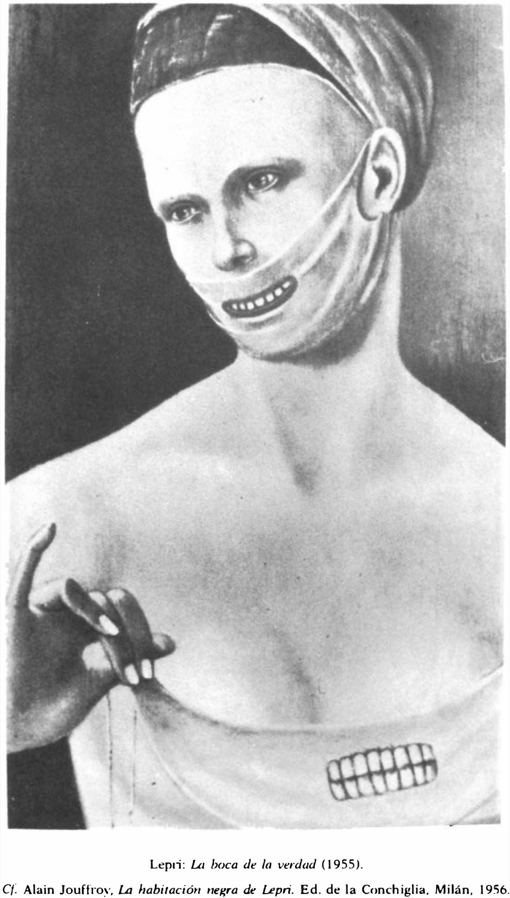

Lágrimas de Eros · Obra 114 de 121
La boca de la verdad
Stanislao Lepri (1955)

Busto de una mujer con el pecho descubierto: una venda le tapa la parte baja de la cara y lleva pintada una boca con dientes, y otra dentadura aparece sobre el escote. Bataille remite, para Lepri, al libro de Alain Jouffroy «La chambre noire de Lepri» (Milán, 1956).
Lo que hace que destaque
Busto de una mujer con el pecho descubierto: una venda le tapa la parte baja de la cara y lleva pintada una boca con dientes, y otra dentadura aparece sobre el escote. Bataille remite, para Lepri, al libro de Alain Jouffroy «La chambre noire de Lepri» (Milán, 1956).
Contexto histórico
Sin identificar en catálogos en línea. El título alude a la Bocca della Verità de Roma.
Autoría y procedencia
Stanislao Lepri (1905-1980), pintor italiano adscrito al realismo mágico y al surrealismo, estrecho colaborador y compañero de Leonor Fini en París.
En los libros
Las lágrimas de Eros, de Georges Bataille · Lámina de la p. 196
Ficha pendiente de contrastar con fuentes académicas.